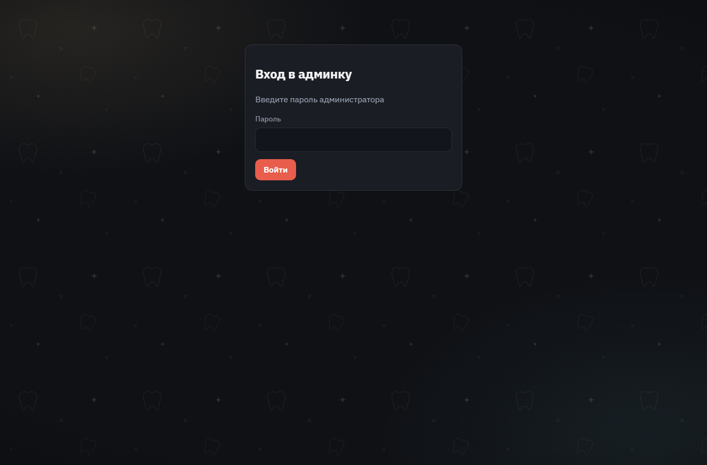

| Выполнил: | Алишер [Фамилия] |
| Группа: | [номер группы] |
| Преподаватель: | [ФИО преподавателя] |
| Дата: | 05.10.2026 |
Объектом работы является веб-сайт «Клиника доктора Сулейменова» — сайт семейной стоматологии в Астане с каталогом услуг и товаров, корзиной, оформлением заявок, административной панелью и встроенным ИИ-ассистентом ELLA. Сайт предназначен для реальной эксплуатации, поэтому основное внимание в работе уделено не только функциональности, но и надёжности: корректной работе при сбоях внешних сервисов, понятным сообщениям об ошибках и простоте развёртывания.
Цель работы — довести проект до состояния, пригодного для эксплуатации (production): найти и устранить ошибки в логике заказов и в обработке сбоев, а также упаковать приложение в Docker-контейнер для переносимого развёртывания.
Задачи:
Сайт состоит из публичной части (витрины) для посетителей и закрытой административной панели для владельца клиники.
get_catalog,
get_service, get_clinic_info). Посетитель может прикрепить фото.
| Слой | Технологии |
|---|---|
| Клиент (frontend) | React 19, React Router 7, Vite 8 (сборка), CSS, pdfmake (PDF в браузере) |
| Сервер (backend) | Node.js 24, Express 4, multer (загрузка файлов), cookie-parser, pdfmake (PDF-счета) |
| База данных | SQLite через better-sqlite3 (режим WAL, транзакции BEGIN IMMEDIATE) |
| Искусственный интеллект | OpenAI Chat Completions API с инструментами (function calling) |
| Внешние данные | Курсы валют: Национальный банк РК (основной источник), open.er-api.com (резервный) |
| Развёртывание | Docker (многоэтапная сборка), Docker Compose |
Приложение построено как монолит из одного процесса Node.js: сервер Express одновременно отдаёт
собранное React-приложение (SPA) и обслуживает REST API. Данные хранятся в одном файле SQLite,
фотографии — в папке public/uploads.
| Браузер посетителя / администратора React SPA |
⇄ | Сервер Node.js + Express REST API, раздача SPA, логирование, лимиты запросов |
⇄ | SQLite товары, заказы, сессии |
| ⇅ | ||||
| Внешние сервисы OpenAI (ELLA), НБ РК и open.er-api (курсы) |
| Папка / файл | Назначение |
|---|---|
server.js | HTTP-сервер: маршруты API, авторизация, валидация, обработка ошибок |
db/ | Работа с SQLite: схема, транзакции заказов, миграция и импорт данных |
core/ | Ядро ИИ-ассистента ELLA: вызовы OpenAI, инструменты, дедлайны и повторы |
lib/ | Общие модули: логгер, курсы валют, перевод ошибок загрузки файлов |
config/ | Настройки: контакты клиники, реквизиты компании, загрузка .env |
client/src/ | React-приложение: страницы, компоненты, контексты (корзина, валюта, авторизация) |
scripts/ | Автоматические тесты (verify-shop.js, verify-ella-core.js) |
Dockerfile, docker-compose.yml | Сборка и запуск контейнера |
Объём исходного кода: сервер — около 3 300 строк (23 файла), клиент — около 3 650 строк JavaScript/JSX (35 файлов) и 2 300 строк CSS, автотесты — около 570 строк.
| Метод и путь | Назначение | Доступ |
|---|---|---|
GET /api/services | Каталог товаров и услуг | все |
POST/PUT/DELETE /api/services | Создание, изменение, удаление позиции | админ |
POST /api/orders | Оформление заявки | все |
GET/PATCH/DELETE /api/orders | Список заказов, смена статуса, удаление | админ |
GET /api/orders/:id/invoice.pdf | PDF-счёт на оплату | админ |
POST /api/ella/chat, GET /api/ella/status | Чат с ИИ-ассистентом | все |
POST /api/login, /api/logout, GET /api/me | Вход и проверка сессии | все |
GET /api/shop-config | Курсы валют, лимиты магазина | все |
GET /api/export/catalog.pdf | PDF-каталог | все |
POST /api/client-errors | Приём ошибок из браузера в лог сервера | все |
GET /api/health | Проверка работоспособности (мониторинг, Docker) | все |
На первом этапе была проверена логика товаров и заказов. Для каждой операции проверялось, что произойдёт при одновременных запросах, некорректных данных и злоупотреблениях. В результате в системе действуют следующие механизмы защиты:
| Механизм | Как работает |
|---|---|
| Атомарное списание остатка | Остаток уменьшается внутри транзакции SQLite (BEGIN IMMEDIATE)
с условием quantity >= qty. Два покупателя не могут купить последний товар одновременно.
Отмена или удаление заказа возвращает остаток. |
| Ограничение количества | Не более 10 штук одной позиции (настраивается) и не более 30 позиций в заказе. |
| Проверка телефона | Номер нормализуется и проверяется на правдоподобие; не более 3 открытых заказов на один номер. |
| Цена считается на сервере | Клиент передаёт только идентификатор и количество; цена и сумма берутся из базы, поэтому подменить цену из браузера нельзя. |
| Идемпотентность | Повторная отправка той же заявки (заголовок Idempotency-Key) не создаёт дубликат. |
| Ограничение частоты запросов | Заявки — 12, сообщения ELLA — 30, попытки входа — 10, PDF — 30 запросов за 15 минут с одного IP. |
| Безопасность | Политика CSP, cookie httpOnly/SameSite/Secure, запрет слабых паролей в production,
доверие к заголовку X-Forwarded-For только при явной настройке TRUST_PROXY. |
Аудит проводился по техническому заданию «Сквозной аудит обработки ошибок и заглушек (Fallbacks)» и охватывал весь репозиторий: сервер, базу данных, ядро ИИ, конфигурацию и React-клиент.
catch, значения по умолчанию, ветки «если данных нет».Каждая проблема заносилась в реестр с указанием файла и строки, типа, сценария отказа и примера кода.
Полный отчёт аудита находится в файле docs/audit-fallbacks-errors.md.
Исходная оценка устойчивости — 6 из 10. Базовый каркас оказался надёжным (обработчики ошибок React на всех уровнях, глобальный обработчик Express, автоматический откат транзакций), но были найдены «тихие подмены» — ситуации, когда система при сбое показывает правдоподобные, но ложные данные, и никто об этом не узнаёт.
| Критичность | Найдено |
|---|---|
| Critical | 0 |
| High | 4 |
| Medium | 12 |
| Low | 11 |
| Всего | 27 |
| Код | Проблема | Последствия |
|---|---|---|
| F1 | Имитация ответа ИИ при сбое | При любой ошибке OpenAI чат молча подставлял шаблонные ответы от имени ИИ. Посетитель и владелец не знали, что ИИ не работает, — при истёкшем ключе сайт неделями «работал» бы на шаблонах. |
| F3 | Нулевые реквизиты в счетах | Без настроенных реквизитов формировались PDF-счета с ИИН 000000000000 и
IBAN KZ000… — документ выглядел настоящим, но оплатить по нему было невозможно. |
| E1 | Падение сервера из таймера | Ошибка в фоновой очистке сессий не перехватывалась и могла остановить весь сервер. |
| E2 | Сбои ИИ не логировались | Ошибки OpenAI (неверный ключ, исчерпанная квота) не попадали в журнал — диагностировать проблему было невозможно. |
Исправления выполнялись в четыре этапа, от более критичных к менее критичным. После каждого этапа запускались автотесты, а их набор расширялся проверками нового поведения.
unhandledRejection / uncaughtException, понятное сообщение при занятом порте и
корректное завершение (SIGTERM/SIGINT) с закрытием базы.requestId), методом, путём и IP. Ответ с ошибкой 500 содержит этот идентификатор, и
администратор видит его как «код ошибки». Ошибки из браузера (падения React, необработанные исключения)
отправляются на сервер и попадают в тот же журнал.lib/rates.js): раньше курсы были зашиты в код (480/520/5,2) и молча устаревали.
Теперь они обновляются раз в час с сайта Нацбанка РК, при сбое — с резервного источника.
Каждый ответ проверяется на правдоподобие, последний удачный курс сохраняется на диск и используется при недоступности
обоих источников. Администратор может закрепить курс вручную через .env.AbortSignal), чтобы не тратить деньги впустую.lib/uploadErrors.js): английские сообщения библиотеки multer
заменены русскими с реальными лимитами («Фото больше 5 МБ»). Используются корректные HTTP-коды:
413 — размер, 415 — тип файла, 400 — прочее; сбои диска возвращают 500 и пишутся в журнал.config/contacts.defaults.json) и переопределяются через .env.
Сервер передаёт их клиенту через тег <meta>, поэтому смена номера не требует пересборки сайта.
Некорректный номер не даёт серверу запуститься..env загружался позже модуля реквизитов, из-за чего
реквизиты компании из .env молча игнорировались. Исправлено: .env загружается первым.До исправления (чат при любой ошибке подменял ответ ИИ шаблоном):
if (response.ok && data.reply) {
reply = data.reply;
} else {
reply = replyTo(clean, cache); // шаблонный «ИИ-ответ» при любой ошибке
}
После исправления сервер журналирует причину и возвращает посетителю код ошибки и идентификатор запроса, а клиент показывает честное сообщение с кнопкой «Повторить»:
if (code !== "bad_request") {
logger.error("ella.chat", { ...logger.requestMeta(req), code, error });
}
res.status(isElla ? error.status || 500 : 500).json({
error: ELLA_PUBLIC_ERRORS[code] || ELLA_PUBLIC_ERRORS.internal,
code,
requestId: req.id,
});
Для переносимого развёртывания проект упакован в Docker. Сайт запускается на любом сервере
одной командой docker compose up -d --build, без установки Node.js и компиляторов.
| Решение | Зачем |
|---|---|
| Многоэтапная сборка (3 этапа) | Отдельно собирается React-клиент и компилируются нативные модули (better-sqlite3). В итоговый образ попадает только необходимое, без компиляторов и dev-зависимостей. |
Запуск от непривилегированного пользователя node | Безопасность: процесс в контейнере не имеет прав root. |
| Именованные тома (volumes) | База данных и фото хранятся вне образа и сохраняются при пересборке и обновлении. |
| Проверка здоровья (HEALTHCHECK) | Docker регулярно опрашивает /api/health и видит, если приложение перестало отвечать. |
| Корректная остановка | Процесс-инициализатор (init: true) передаёт сигнал SIGTERM, сервер завершает запросы и закрывает базу без потери данных. |
| Секреты не попадают в образ | Файл .env исключён из сборки и подключается только при запуске. |
| Скрипт переноса данных | db/importLocal.js копирует существующую базу в контейнер через backup API SQLite — без потери записей из журнала WAL. |
| Ротация логов | Журнал контейнера ограничен (5 файлов по 10 МБ) и не переполнит диск. |
Написан набор интеграционных тестов scripts/verify-shop.js (команда npm run verify:shop).
Тест запускает настоящий сервер на временной базе данных и проверяет его поведение через HTTP, включая
сценарии сбоев. Количество проверок росло вместе с исправлениями: 29 → 32 → 42 → 48.
Основные группы проверок:
requestId, понятные ошибки загрузки файлов, приём ошибок из браузера;Отдельный тест scripts/verify-ella-core.js проверяет ядро ИИ-ассистента: инструменты, формирование
ответа и HTTP-контракт с реальным вызовом OpenAI.
| Проверка | Результат |
|---|---|
npm run verify:shop | 48 / 48 пройдено |
verify-ella-core.js (включая HTTP) | Все проверки пройдены |
| Проверка Docker-образа (12 сценариев: страницы, вход, товар с фото, заказ с пересчётом валюты, PDF, курсы, ELLA) | 12 / 12 пройдено |
| Остановка контейнера и сохранность данных после перезапуска | Данные сохранены |
Пример фрагмента вывода тестов:
[ок] Занятый порт: понятное сообщение и выход с кодом 1: код 1 [ок] Перебор пароля упирается в лимит: последняя попытка: 429 [ок] В production короткий пароль не даёт стартовать: код выхода 1 [ок] Кривой CONTACT_WHATSAPP не даёт стартовать: код 1 Итого: 48/48
| Критичность | Найдено | Исправлено | Осталось |
|---|---|---|---|
| High | 4 | 4 | 0 |
| Medium | 12 | 12 | 0 |
| Low | 11 | 5 | 6 |
| Всего | 27 | 21 | 6 |
Все проблемы уровней High и Medium устранены. Оставшиеся шесть проблем уровня Low не влияют на
корректность заказов и данных: пустые блоки catch без журналирования в нескольких местах клиента,
неосвобождаемые превью файлов в чате, мелкие значения по умолчанию в PDF-каталоге и конфигурации клиента.
TRUST_PROXY.В ходе работы проведена проверка логики магазина и сквозной аудит обработки ошибок веб-сайта стоматологической клиники. Найдено 27 проблем, из них исправлена 21, включая все проблемы уровней High и Medium. Главный результат — система больше не скрывает сбои: при отказе ИИ, источника курсов валют, загрузки файлов или каталога пользователь получает честное понятное сообщение, а владелец — запись в журнале с идентификатором запроса.
Кроме того, курсы валют стали обновляться автоматически, ИИ-ассистент получил ограничение времени ответа, контакты клиники собраны в одном месте, а приложение упаковано в Docker-контейнер с сохранением данных и корректной остановкой. Все изменения подтверждены автоматическими тестами (48 из 48) и проверкой собранного Docker-образа. Поставленная цель — подготовить проект к эксплуатации — достигнута.
npm run install:all # установка зависимостей сервера и клиента npm run build # сборка React-клиента npm start # запуск сервера: http://localhost:3000
docker compose up -d --build # собрать и запустить docker compose logs -f # просмотр журнала docker compose down # остановить (данные сохраняются)
npm run verify:shop
Админ-панель доступна по адресу http://localhost:3000/admin. Пароль задаётся в файле
.env (параметр ADMIN_PASSWORD).